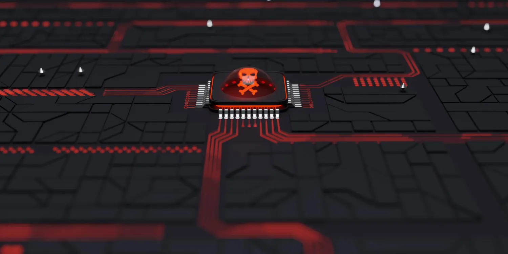

March 18, 2026
8 min read
Zero Downtime Cloud Migrations: A Practitioner's Blueprint
How to migrate mission-critical enterprise workloads to multi-cloud environments without a single second of production interruption — including real-world case studies and architecture diagrams.
March 14, 2026
11 min read
LLM Enterprise Integration Patterns That Actually Scale
A technical breakdown of retrieval-augmented generation (RAG), fine-tuning strategies, and prompt engineering frameworks that production teams are using to deploy LLMs at enterprise scale.
March 10, 2026
10 min read
Building a Zero Trust Network Architecture: Complete Guide for 2026
Zero Trust is no longer optional. This step-by-step guide covers identity verification layers, micro-segmentation strategies, and least-privilege access policies for multinational enterprise environments.
March 06, 2026
7 min read
Kubernetes Cost Optimization: Slash Cloud Bills Without Sacrificing Performance
From right-sizing workloads to spot instance strategies and namespace-level quotas — here are the top levers enterprise FinOps teams pull to reduce Kubernetes spend by up to 60%.
Feb 28, 2026
13 min read
MLOps Production Pipelines: From Model Training to Live Inference at Scale
A comprehensive walkthrough of building robust MLOps pipelines using Kubeflow, MLflow, and Seldon Core — including monitoring strategies, drift detection, and automated retraining triggers.

Cybersecurity
Feb 21, 2026
9 min read
Incident Response Playbook: Containing Ransomware in Under 90 Minutes
Real-world runbook from a live ransomware containment exercise — covering isolation procedures, forensic preservation, stakeholder communication, and recovery sequencing without paying the ransom.
Feb 14, 2026
6 min read
Edge Computing for IoT: Achieving Sub-5ms Latency in Industrial Environments
Designing edge-native data processing pipelines for manufacturing floors and smart cities — a technical architecture comparison of AWS Greengrass, Azure IoT Edge, and open-source alternatives.
Feb 07, 2026
12 min read
AI Governance Frameworks: Ensuring Compliance Without Stifling Innovation
A balanced exploration of the EU AI Act, NIST AI RMF, and internal governance mechanisms enterprises can adopt to responsibly deploy AI systems while staying ahead of regulatory requirements.
No articles found matching your search.